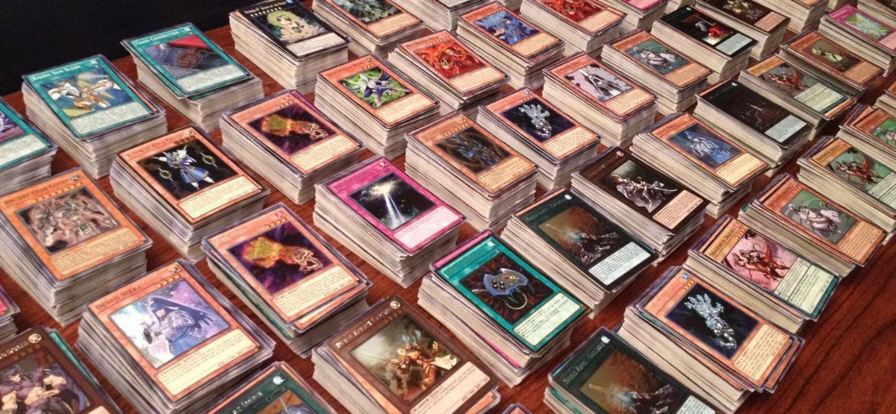

Origen del proyecto
Yugidex nace a partir de una necesidad real dentro del mundo del coleccionismo de cartas.
Tras una conversación con un amigo, se detectó un problema común: la mayoría de aplicaciones existentes ofrecen catálogos completos de cartas, pero no están enfocadas en responder a una pregunta clave para coleccionistas y tiendas:
"¿Qué cartas tengo exactamente en mi colección?"

Problema del coleccionista
Las soluciones actuales obligan al usuario a crear decks manualmente o a consultar bases de datos oficiales, lo que resulta poco práctico cuando se trabaja con grandes volúmenes de cartas.
La introducción manual de datos es viable para unas pocas cartas, pero se vuelve inviable cuando se trata de cientos o miles, llegando incluso a colecciones de decenas de miles de unidades.
Yugidex surge como respuesta a esa necesidad: catalogar cartas de forma rápida, eficiente y sin fricción, eliminando la carga del trabajo manual.
Usuario objetivo
Yugidex está orientado principalmente a:
Coleccionistas
Que necesitan tener un control claro y real de su colección.
Tenderos
Que requieren gestionar inventarios de cartas de forma rápida y fiable.
La aplicación está diseñada como una solución escalable, pensada para crecer y evolucionar con nuevas funcionalidades.
Actualmente se encuentra en fase MVP completamente funcional, con múltiples mejoras planificadas a corto y medio plazo.
Estado actual del proyecto
En su estado actual, Yugidex permite:
- Escanear cartas físicas mediante la cámara del dispositivo.
- Identificar automáticamente cada carta.
- Almacenar las cartas en una base de datos propia del usuario.
- Consultar y gestionar la colección (visualización y eliminación).
- Crear y editar decks personalizados.
Todo el flujo está optimizado para reducir al mínimo la intervención manual del usuario.
Propuesta de valor
El principal valor de Yugidex es el ahorro masivo de tiempo.
Datos automáticos
Los datos de las cartas se obtienen automáticamente desde una API externa.
Sin intervención manual
El usuario no introduce información manualmente.
Sistema retroalimentado
La base de datos no parte de un catálogo cerrado, sino que crece en función de las cartas reales de los usuarios.
Este enfoque evita:
- Mantener bases de datos gigantescas desde el inicio.
- Duplicar información innecesaria.
- Invertir tiempo en tareas repetitivas.
En la práctica, el tiempo necesario para introducir una carta manualmente equivale al tiempo que Yugidex necesita para catalogar decenas o cientos mediante escaneo, lo que marca una diferencia crítica en proyectos de gran escala.